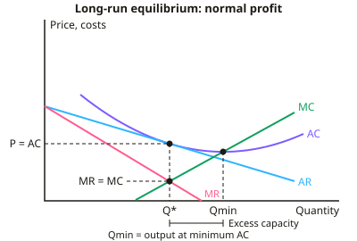

A-level Economics Year 13 · Topic 9
Imperfect competition, monopoly and contestable markets
This topic analyses markets where firms have some power over price, from monopolistic competition to monopoly.
We will cover monopolistic competition, oligopoly, the kinked demand curve, collusion and game theory.
Then we look at monopoly power, price discrimination, contestable markets, and different pricing strategies.
- 9 subtopics
- 324 questions
- Free: 9.1 notes and 10 questions
In this topic
- 9.1Monopolistic competition: characteristics, short-run and long-run equilibrium and efficiencyFree below · 28 questions
- 9.2Oligopoly: characteristics, concentration ratios and interdependenceOpen in Full Marks · 32 questions
- 9.3Non-collusive oligopoly: kinked demand curve, price rigidity, price leadership and price warsOpen in Full Marks · 30 questions
- 9.4Collusion, cartels and game theory (prisoner's dilemma and Nash equilibrium)Open in Full Marks · 41 questions
- 9.5Monopoly power: natural monopoly and the costs and benefits of monopoly compared with competitionOpen in Full Marks · 56 questions
- 9.6Price discrimination: conditions, types, diagrams and welfare effectsOpen in Full Marks · 27 questions
- 9.7Contestable markets: barriers to entry, sunk costs, hit-and-run competition and limit pricingOpen in Full Marks · 54 questions
- 9.8Price and non-price competition and pricing strategies (predatory pricing, cost-plus, loss leaders)Open in Full Marks · 30 questions
- 9.9Perfect competition: short-run and long-run equilibrium, efficiency and the shutdown pointOpen in Full Marks · 26 questions
9.1 · Free notes
Monopolistic competition: characteristics, short-run and long-run equilibrium and efficiency

Key points
- Monopolistic competition has many small firms selling differentiated products that are close but imperfect substitutes, e.g. independent restaurants, hairdressers and local retailers.
- There are low barriers to entry and exit, so firms enter when supernormal profit exists and leave when they make losses. There is no strong long-run brand or cost advantage.
- Differentiation gives each firm some price-making power. The AR (demand) curve slopes downward but is relatively elastic because many close substitutes exist, and MR lies below AR.
- Short-run equilibrium: the firm maximises profit where MR = MC, and the price is read off the AR curve. If AR > AC it earns supernormal profit, where profit = (AR − AC) × Q. If AR < AC it makes a loss.
- Long-run equilibrium: supernormal profit attracts entry, so each firm's AR shifts left and becomes more elastic. This continues until AR is tangential to AC, giving AR = AC and normal profit. At that point there is no incentive to enter or exit.
- If firms make losses in the short run, some exit. Surviving firms' AR shifts right until normal profit is restored, so the long-run outcome is again AR = AC.
- Allocative inefficiency: at the profit-maximising output P > MC, so output is below the socially optimal level and there is a welfare loss.
- Productive inefficiency and excess capacity: tangency occurs on the falling part of AC, so output is below the minimum-AC output. Firms could cut unit costs by producing more.
- Non-price competition is important: branding, advertising, quality, location and loyalty schemes. These raise AC but may shift demand right or make it less elastic.
- Dynamic efficiency: normal long-run profit leaves little for R&D, but the need to differentiate encourages innovation and product development.
- Evaluation: consumers value variety and choice, and the inefficiency is small if demand is highly elastic. Brand loyalty can create barriers, so supernormal profit may persist. Compare with perfect competition, which has horizontal demand and P = MC = min AC.
In more detail
- Worked short-run profit: a hair salon's profit-maximising output is 200 cuts a month at £30, with AC of £24 → supernormal profit = (30 − 24) × 200 = £1,200.
- Long-run adjustment: a new type of café, such as bubble tea shops, earns high profits at first, but copycats open nearby and profits fall back to normal.
- Worked excess capacity: if minimum AC is reached at 300 cuts a month but the salon produces 200 in long-run equilibrium, excess capacity = 100 cuts a month.
- Exam tip: in the long-run diagram, AR just touches AC on its falling section, at the same output where MR = MC.
Practice
Monopolistic competition: characteristics, short-run and long-run equilibrium and efficiency: 10 questions
Pick an answer to check it, or open the answer for the explanation.
1. Which combination of features defines monopolistic competition?
- One firm, unique product, blocked entry
- Few firms, differentiated products, high barriers
- Many firms, differentiated products, low barriers to entry
- Many firms, homogeneous product, no barriers
Show answer
C: Many firms, differentiated products, low barriers to entry. Monopolistic competition has many sellers, product differentiation giving some price-making power, and low barriers so firms can enter and exit freely.
2. In long-run equilibrium, a monopolistically competitive firm produces where:
- MR = MC and AR = AC
- AR > AC and MR = AC
- AR = MC at minimum AC
- MR = MC and AR = MC
Show answer
A: MR = MC and AR = AC. Profit maximisation requires MR = MC. Free entry removes supernormal profit until AR is tangent to AC, so AR = AC and only normal profit is earned.
3. Firms in a monopolistically competitive market earn supernormal profit. What is the long-run effect on a typical firm's demand curve?
- Shifts left and becomes less elastic
- Shifts right and becomes less elastic
- Shifts left and becomes more elastic
- No change because products are differentiated
Show answer
C: Shifts left and becomes more elastic. Entry of new firms selling close substitutes takes customers from existing firms. Each firm's AR shifts left and becomes more elastic until profit is normal.
4. A café sells 200 coffees a day at £3.50 each. Its average cost is £3.00 per coffee. Its daily supernormal profit is:
- £50
- £600
- £700
- £100
Show answer
D: £100. Supernormal profit = (AR − AC) × Q = (£3.50 − £3.00) × 200 = £100.
5. Why is a monopolistically competitive firm allocatively inefficient in long-run equilibrium?
- Price equals average cost
- Output is where MR exceeds MC
- Price exceeds marginal cost
- It earns only normal profit
Show answer
C: Price exceeds marginal cost. Allocative efficiency needs P = MC. With a downward-sloping AR, price at the profit-maximising output is above MC, so output is below the socially optimal level.
6. What is meant by 'excess capacity' in long-run monopolistic competition?
- Output is below the level at minimum average cost
- Firms hold large stocks of unsold goods
- There are too few firms to meet demand
- Firms produce where P = MC
Show answer
A: Output is below the level at minimum average cost. AR is tangent to AC on its falling section, so each firm produces less than the output at minimum AC and could cut unit costs by producing more.
7. Which market is the best example of monopolistic competition?
- Supply of piped water in a region
- UK mobile network operators
- Independent restaurants in a city
- UK wheat farming
Show answer
C: Independent restaurants in a city. Restaurants are numerous, differentiated and easy to enter. Water is a natural monopoly, mobile networks are an oligopoly and wheat is close to perfect competition.
8. Compared with a perfectly competitive firm, a monopolistically competitive firm's demand curve is:
- Identical, as both are price takers
- Downward-sloping because of product differentiation
- Horizontal at the market price
- Vertical in the short run
Show answer
B: Downward-sloping because of product differentiation. Differentiation gives some price-making power, so the firm faces a downward-sloping AR curve. A perfectly competitive firm is a price taker facing horizontal demand.
9. In the short run a monopolistically competitive firm makes a loss. Other things equal, what happens in the long run?
- Firms exit and demand for survivors shifts right
- Firms enter and each firm's demand shifts left
- All firms shut down immediately
- Price falls until AC is minimised
Show answer
A: Firms exit and demand for survivors shifts right. Losses cause some firms to exit. Survivors gain customers, so their AR shifts right until AR = AC and normal profit is restored.
10. Which is the strongest argument that monopolistic competition may be acceptable despite its inefficiency?
- Consumers gain from variety and choice
- Firms earn large long-run supernormal profit
- Price equals marginal cost
- It achieves productive efficiency
Show answer
A: Consumers gain from variety and choice. Differentiation gives variety that consumers value, which may outweigh modest inefficiency. The other options are not true in long-run equilibrium.
Keep going in Full Marks
Full Marks has 28 questions on Monopolistic competition: characteristics, short-run and long-run equilibrium and efficiency (18 more than here), set out in practice levels. You also get notes and 3D models for all 9 subtopics of Imperfect competition, monopoly and contestable markets, plus games, timed exams and past papers.